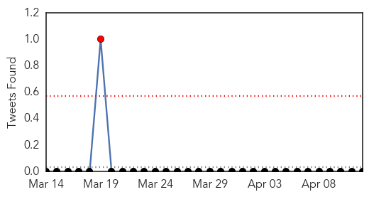
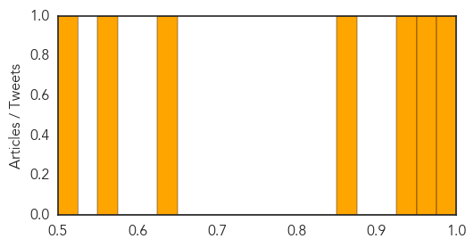

Dengue Fever
30-Day Web Trend
5 alerts, 2 warnings
30-Day Twitter Trend
5 alerts, 0 warnings

Article Locations
Article Confidences

Top Articles:
Top Tweets:
-
No tweets found for Apr 12, 2014
Influenza
30-Day Web Trend
1 alerts, 0 warnings

30-Day Twitter Trend
0 alerts, 0 warnings

Article Locations

Article Confidences
Top Articles:
- 0.976
- immunisation for adults. When do adults need to get immunised?
- 0.953
- Report Questions Effectiveness of Flu Meds
- 0.933
- Here’s why scientists just published the recipe for superflu
- 0.865
- Singapore to Check Tamiflu after UK based Cochrane Collaboration Report on Tamiflu
- 0.626
- Articles, event listings and opinion
- 0.567
- New target to attack flu virus identified
- 0.512
- Flu Drug Stockpiling Reported to Be a Waste of Money
Top Tweets:
-
No tweets found for Apr 12, 2014